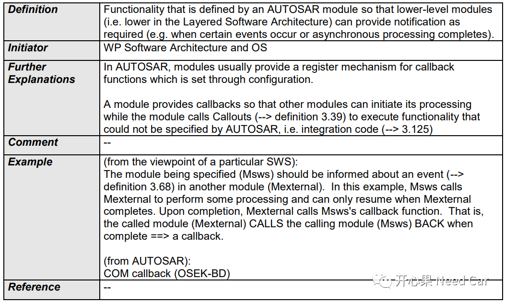
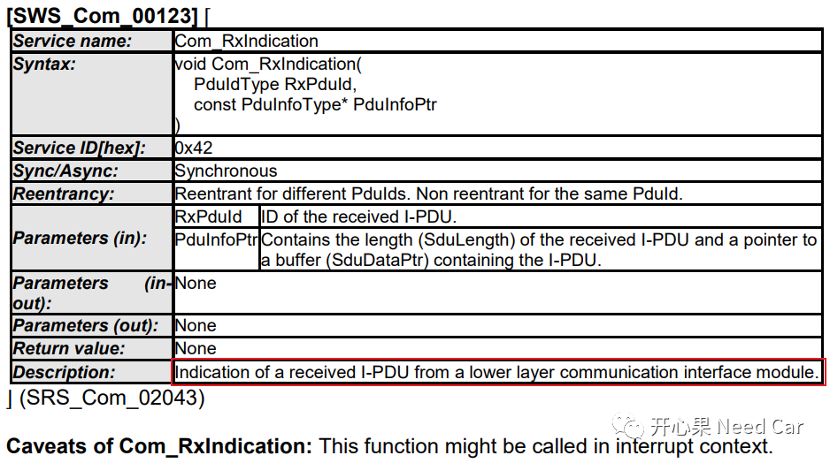
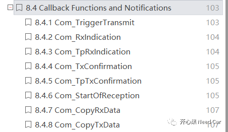
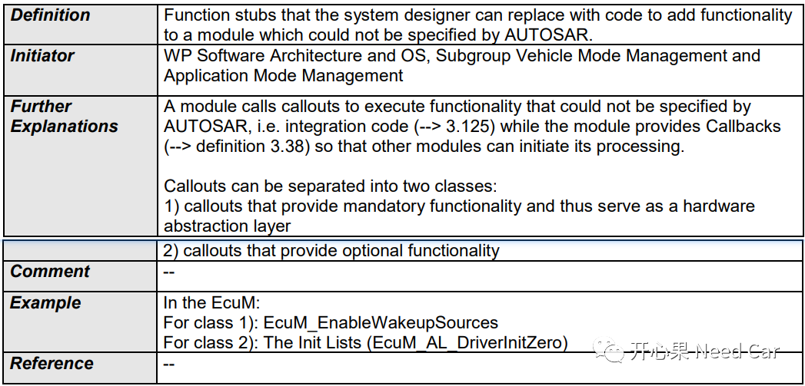
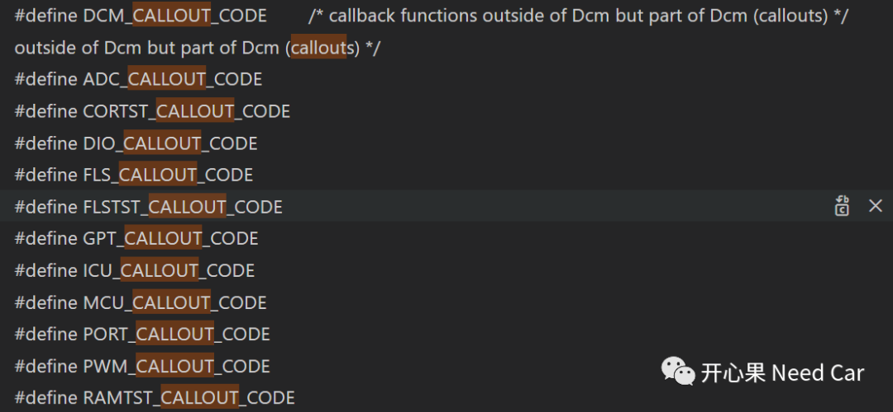
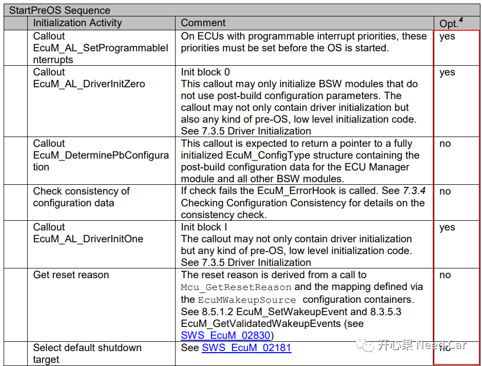

开心果 Need Car · 2022-03-14T13:24:00+08:00 · 微信原文
本文讨论焦点是Callout与Callback，在Autosar里面，Callout与Callback分别是什么？两者区别是什么？搞Autosar这些年了，你分清楚了没？
来，先看一下，Autosar规范里是如何定义“Callback”的，如下所示：

这里就不照着翻译了，来说一下个人理解。Autosar的软件架构将各个模块进行了分层，每个模块各司其职，但又需要信息交互。信息交互的过程中，底层需要为上层提供服务，上层也需要时时知道自己请求服务的状态（是否执行成功），比如：有应用层消息来了，路由模块（如：PDUR）将该消息路由给COM层。但是这个消息怎么给COM呢？对，就是上图说的，COM需要在PDUR提前注册一个函数，当有消息给COM的时候，PDUR直接调用对应接口通知到COM即可，而COM不必一直等待。
这里说的消息就是上图中发生的特定事件（Certain Events）或者异步处理完成事件（asynchronous processing completes）。
Com_RxIndication
以Com_RxIndication 为例，如下所示：


Callback的百度词条解释
百度词条中给出的callback解释如下所示：
typedef void* (*callBack_Pre)(void* argu1, void* argu2);typedef void* (*callBack_Post)(void* argu1);typedef struct{int Module_A_arg;callBack_Pre Module_A_CallbackPre;callBack_Post Module_A_CallbackPost;}Module_A_Type;Module_A_Type Module_A_Obj;void Module_A_Handler(Module_A_Type* Module_A_Obj_Info){/* Module A Pre Handle */if(Module_A_Obj_Info->Module_A_CallbackPre != nullptr){Module_A_Obj_Info->Module_A_CallbackPre(nullptr, nullptr);}/* Module A Post Handle */if(Module_A_Obj_Info->Module_A_CallbackPost != nullptr){Module_A_Obj_Info->Module_A_CallbackPost(nullptr, nullptr);}}
如上，需要开发一个Module A模块，实现某个功能需求，一般我会先定义这个模块所需的信息对象，即定义一个结构体Module_A_Type，该结构体里面会包含两个函数指针，一个是Module A处理信息前的Action，一个是Module A处理信息后的Action。
需要添加特定功能时，可以根据实际情况，决定在Module A处理信息之前添加还是处理信息之后添加。
Autosar规范对Callout的具体定义如下所示：

为什么要用Callout

Callout Class1/Class2

参考资料
AUTOSAR_TR_Glossary.pdf
AUTOSAR_SWS_COM.pdf
AUTOSAR_SWS_ECUStateManager.pdf
https://baike.baidu.com/item/CALLBACK
往期精彩回顾